Триггеры
Исследование двухступенчатых триггеров
1. Цель работы:
Целью работы является изучение принципов построения основных типов Триггеров
2. ТЕОРЕТИЧЕСКИЕ СВЕДЕНИЯ
2.1. Триггеры
2.1.1. Общие замечания
Триггером называется устройство, имеющее два устойчивых состояния и способное под действием входных сигналов скачком переходить из одного устойчивого состояния в другое. Триггер – это простейший цифровой автомат с памятью и способностью хранить 1 бит (binary digit – двоичный разряд) информации. В основе любого триггера находится регенеративное кольцо из двух инверторов. Триггер имеет два выхода: прямой Q и инверсный Q . Состояние триггера определяется значением потенциала на прямом выходе. Если, например, на прямом выходе имеется потенциал, соответствующий логической 1, то триггер находится в единичном состоянии (при этом потенциал на инверсном выходе соответствует логическому 0). В противном случае триггер находится в нулевом состоянии. Число входов зависит от структуры и функций, выполняемых триггером.
В настоящее время существует несколько разновидностей триггерных схем, которые появились как результат разработки новых цепей запуска. По способу записи информации триггеры делятся на асинхронные (не- синхронизируемые) и синхронные (синхронизированные). У асинхронных триггеров запись информации (переключение триггера) происходит под действием информационных сигналов. Такие триггеры имеют только информационные входы. У синхронных триггеров запись информации происходит под действием разрешающих сигналов синхронизации.
Синхронные триггеры бывают со статическим управлением записью, с динамическим управлением записью и двухступенчатые.
Синхронные триггеры со статическим управлением записью принимают информационные сигналы все время, пока действует импульс синхронизации. Следовательно, за время действия импульса синхронизации переключение триггера может быть многократным. У таких триггеров вход С – статический. Синхронные триггеры с динамическим управлением записью принимают только те информационные сигналы, которые были на информационных входах к моменту прихода синхронизирующего импульса. У таких триггеров вход С–динамический. Синхронные двухступенчатые триггеры состоят из двух ступеней. Запись информации в первую ступень производится с появлением синхронизирующего импульса, а во вторую ступень – после окончания действия синхронизирующего импульса. Следовательно, двухступенчатые триггеры задерживают выходную информацию на время, равное длительности синхронизирующего импульса. Такие триггеры называют еще триггерами с внутренней задержкой. В составе различных серий существуют микросхемы, содержащие RS-, D-и JK-триггеры. На базе синхронного RS-триггера, D- и JK-триггеров также возможно создание T-триггера. Приняты следующие обозначения входов триггеров:
S – раздельный вход установки триггера в единичное состояние по прямому выходу Q (Set – установка);
R – раздельный вход сброса триггера в нулевое состояние по прямому выходу Q (Reset – сброс);
D – информационный вход (Data input); на него подается информация, предназначенная для записи в триггер;
T – счетный вход (Toggle – переключатель);
C – вход синхронизации (Clock input).
Назначение входов J и K такое же, как и входов S и R (установка и сброс).
Буквы J и K были выбраны в свое время авторами как соседние в алфавите (сравните R и S).
2.1.2. RS-триггеры
RS-триггер – это триггер с раздельной установкой состояний логического нуля и единицы (с раздельным запуском). Он имеет два информационных входа S и R. По входу S триггер устанавливается в состояние ) 0 ( 1 = = Q Q , а по входу R – в состояние ) 1 ( 0 = = Q Q ).
Асинхронные RS-триггеры. Они являются наиболее простыми триггера- ми. В качестве самостоятельного устройства применяются редко, но являются основой для построения более сложных триггеров. В зависимости от логической структуры различают RS-триггеры с прямыми и инверсными входами. Их схемы и условные обозначения приведены на рис. 1, 2. Триггеры такого типа построены на двух логических элементах: 2 ИЛИ-НЕ – триггер с прямыми входами (рис. 1, а, б), 2 И-НЕ – триггер с инверсными входами (рис. 2, а, б). Выход каждого из логических элементов подключен к одному из входов другого элемента, что обеспечивает триггеру два устойчивых состояния.
Состояния триггеров под воздействием определенной комбинации входных сигналов приведены в таблице функционирования (состояний) (табл. 1).
В таблице ) ( n n Q Q обозначены уровни, которые были на выходах триггера до подачи на его входы так называемых активных уровней. Активным называют логический уровень, действующий на входе логического элемента и однозначно определяющий логический уровень выходного сигнала (независимо от логических уровней, действующих на остальных входах). Для элементов ИЛИ-НЕ за активный уровень принимают высокий уровень – 1, а для элементов И-НЕ – низкий уровень – 0.

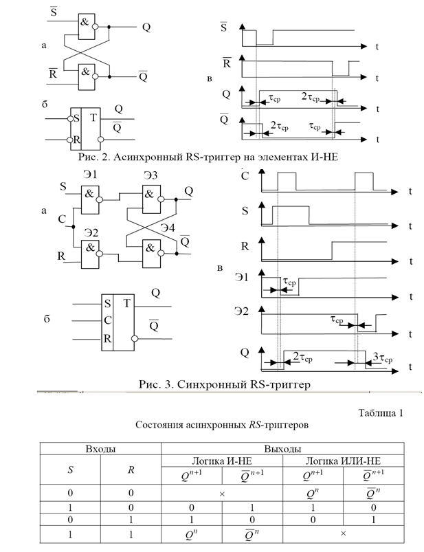
Уровни, подача которых на один из входов не приводит к изменению логического уровня на выходе элемента, называют пассивными. Уровни ) ( 1 1 + + n n Q Q обозначают логические уровни на выходах триггера после подачи информации на его входы. Для триггера с прямыми входами при подаче на вход комбинации сигналов 1 = S , 0 = R на выходе получим) 0 (1 1 1 = = + + n n Q Q .Такой режим называют режимом записи логической единицы. Если со входа S снять единичный сигнал, т.е. установить на входе S нулевой сигнал, то состояние триггера не изменится. Режим 0 = S , 1 = R называют режимом хранения информации, так как информация на выходе остается неизменной. При подаче входных сигналов 0 = S , 1 = R произойдет переключение триггера, а на выходе будет ) 1 ( 0 1 1 = = + + n n Q Q . Такой режим называют режимом записи логического нуля (режим сброса). При 1 = = R S состояние триггера будет неопределенным, так как во время действия информационных сигналов логические уровни на выходах триггера одинаковы) 0 ( 1 1 = = + + n n Q Q , а после окончания их действия триггер может равновероятно принять любое из двух устойчивых состояний. Поэтому такая комбинация 1 = = R S является запрещенной. Для триггера с инверсными входами режим записи логической единицы реализуется при 1 , 0 = = R S , режим записи логического нуля – при 0 , 1 = = R S . При 1 = = R S обеспечивается хранение информации. Комбинация входных сигналов 0 = = R S является запрещенной. Одной из основных характеристик триггера является его быстродействие, которое характеризуется:
- задержкой переключения триггера τt;
- длительностью сигнала записи информации в триггер τu;
- рабочей и максимальной частотой переключения триггера Fp и F.
Из временных диаграмм (рис. 1, в; рис. 2, в) следует, что задержка переключения асинхронных RS-триггеров составит сумму задержек переключения двух логических элементов, на которых выполнены триггеры
ср t τ τ τ τ 2 01 10 = + = .
Длительность сигнала на входах R и S для устойчивого функционирования должна быть не меньше времени переключения триггера, т.е. ср и τ τ 2 =.
Максимальная частота переключения триггера определяется минимально допустимым временным интервалом между двумя последовательными сигналами минимальной длительности, поступающими поочередно на входы S и R:
ср t F τ τ 2 / 1 / 1 max = = .
Поступление очередного входного импульса допускается только после окончания переходных процессов в триггере. Однако при Fmax длительность выходных сигналов не будет превышать τср. Такие сигналы являются недостаточными для надежной передачи информации в логическую цепь, поэтому Fp определяется как
ср р F τ 3 / 1 = .
Синхронные RS-триггеры. Триггерные ячейки – это основа делителей частоты, счетчиков и регистров. В этих устройствах записанную ранее информацию по специальному сигналу, называемому тактовым, следует передать на выход и переписать в следующую ячейку. Для осуществления такого режима в RS-триггер необходимо ввести дополнительный вход C, который может быть статическим или динамическим, т.е. получить синхронный RS-триггер.
Схема синхронного RS-триггера на логических элементах И-НЕ со статическим управлением записью (вход C – статический_______) и его условное обозначение приведены на рис. 3, а, б. Элементы Э1 и Э 2 образуют схему управления, а элементы Э 3 и Э 4 – асинхронный RS-триггер. Иногда такой триггер называют RST-триггером (если вход C считать тактовым входом T).
Триггер имеет прямые статические входы, поэтому управляющим сигналом является уровень логической единицы.
Если на вход C подать сигнал логической единицы 1 = C , то работа триггера аналогична работе простейшего асинхронного RS-триггера. При 0 = C входы S и R не оказывают влияния на состояние триггера. Комбинация сигналов 1 = = = C R S является запрещенной.
Параметры, характеризующие быстродействие синхронного RS-триггера (рис. 3, в):
ср ср и ср t р F τ τ τ τ τ 4 / 1 ; 3 ; 3 = ≥ = .
Синхронный RS-триггер с динамическим управлением записью функционирует согласно сигналам, которые были на информационных входах S и R к моменту появления перепада на входе C. Схема такого триггера, его условное обозначение даны на рис. 4, а, б. Элементы Э1 – Э 4 образуют схему управления, а Э 5 и Э 6 – асинхронный RS-триггер, выполняющий роль элемента памяти. У данного триггера входы S и R инверсные статические (управляющий сигнал – уровень логического нуля), вход С – прямой динамический. Новое состояние триггера устанавливается положительным перепадом напряжения (от уровня логического нуля до уровня логической единицы) на входе С в соответствии с сигналами на информационных входах S и R. Функционирование триггера при некоторых комбинациях входных сигналов можно проследить с помощью таблицы состояний (табл. 2).
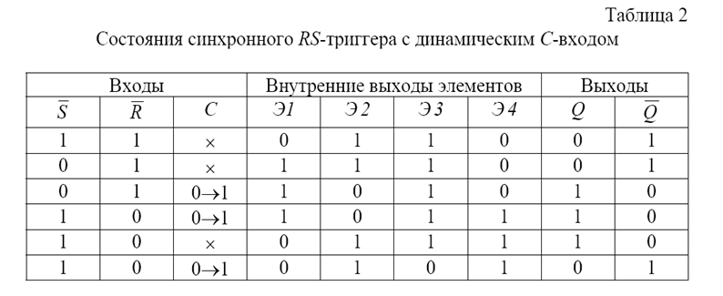
Использование триггерных элементов в составе интегральных схемах
1. ЦЕЛЬ РАБОТЫ
Целью работы является изучение принципов построения основных типов Триггеров
Теоретические сведения
Синхронный двухступенчатый RS-триггер (master-slave, что переводится «мастер-помощник») состоит из двух синхронных RS-триггеров и инвертора (рис. 5). Входы C обоих триггеров соединены между собой через инвертор Э5. Если каждый u1080 из триггеров имеет установку положительным перепадом, то входная RS-комбинация будет записана в первую ступень в момент прихода положительного перепада тактового импульса C, т.е. если 1 = C , то первый триггер функционирует согласно сигналам на его входах S и R. Второй триггер функционировать не может, так как у него 0 = C . Когда придет отрицательный перепад тактового импульса C, на выходе инвертора Э5 он появится как положительный. Тогда первый триггер не функционирует, а для второго триггера C =1 , и данные от выходов первого триггера перепишутся в триггер второй ступени. Сигнал на выходе появится с задержкой, равной длительности тактового импульса.
Из схемы двухступенчатого триггера (см. рис. 5) следует, что переключение триггера – «мастера» происходит с задержкой ср tm τ τ 3 = . Такой же должна быть минимальная длительность тактового импульса: ср и τ τ 3 > .
Задержка переключения триггера – «помощника» складывается из задержки распространения сигнала в инверторе Э5 и в триггере, т.е. τср t s τ=4 . Таким образом, максимальная частота переключения триггера F ср max = 7 / 1 τ.
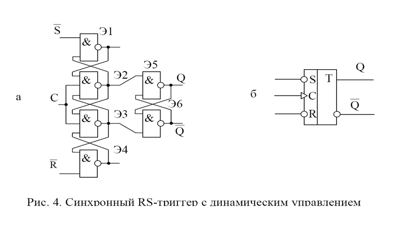
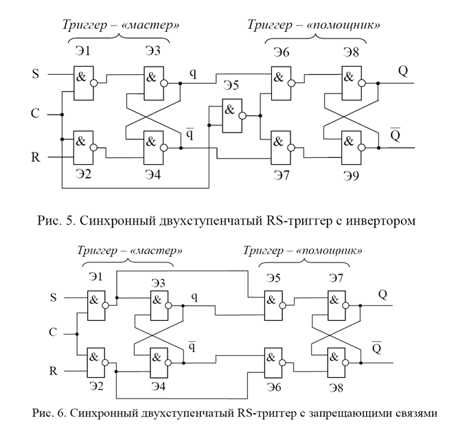
Двухступенчатый RS-триггер может быть построен и без инвертора, т.е. по схеме с запрещающими связями (рис. 6). Такой триггер несколько проще триггера с инвертором.
2.1.3. T-триггеры
Очень часто необходимо использовать триггер для деления частоты входной последовательности импульсов на два, т.е. производить переключение триггера в новое состояние каждым входным импульсом (фронтом или спадом). Такой триггер называют счетным, или T-триггером. Он имеет один управляющий вход T. Триггер такого типа может быть создан на базе синхронного RS-триггера, если прямой выход Q соединить со входом R, а инверсный выход Q соединить со входом S, на вход синхронизации C подать входную последовательность импульсов (т.е. это будет T-вход). На рис. 7, а, б показаны схемы триггера, а на рис. 7, в – временные диаграммы работы.
2.1.4. D-триггеры
D-триггером называется триггер с одним информационным входом, работающий так, что сигнал на выходе после переключения равен сигналу на входе D (delay – задержка) до переключения, т.е. n n D Q = +1.
Основное назначение D-триггеров – задержка сигнала, поданного на вход D. Он имеет информационный вход D (вход данных) и вход синхронизации C.
Вход синхронизации C может быть статическим (потенциальным) и динамическим. У триггеров со статическим входом C информация записывается в течение времени, при котором уровень сигнала 1 = C . В триггерах с динамическим входом C информация записывается только в течение перепада напряжения на входе C.
Динамический вход изображают на схемах треугольником. Если вершина треугольника обращена в сторону микросхемы (прямой динамический вход), то триггер срабатывает по фронту входного импульса, если от нее (инверсный динамический вход) – по срезу импульса. В таком триггере информация на выходе может быть задержана на один такт по отношению ко входной информации.
D-триггеры могут быть построены по различным схемам. На рис. 8, а, б показаны схема одноступенчатого D-триггера на элементах И-НЕ и его условное обозначение. Триггер имеет прямые статические входы (управляющий сигнал – уровень логической единицы). На элементах Э1 и Э 2 выполнена схема управления, а на элементах Э 3 и Э 4 – асинхронный D-триггер. Если уровень сигнала на входе 0 = C , состояние триггера устойчиво и не зависит от уровня сигнала на информационном входе D. При этом на входы асинхронного D-триггера с инверсными входами (Э 3 и Э 4) поступают пассивные ______уровни 1 = = R S . При подаче на вход синхронизации уровня 1 = C информация на прямом выходе будет повторять информацию, подаваемую на вход D.
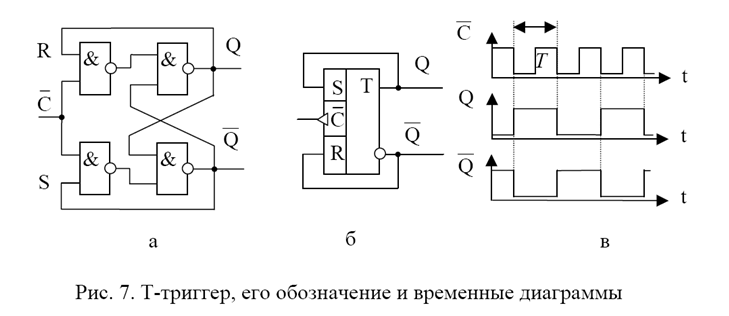
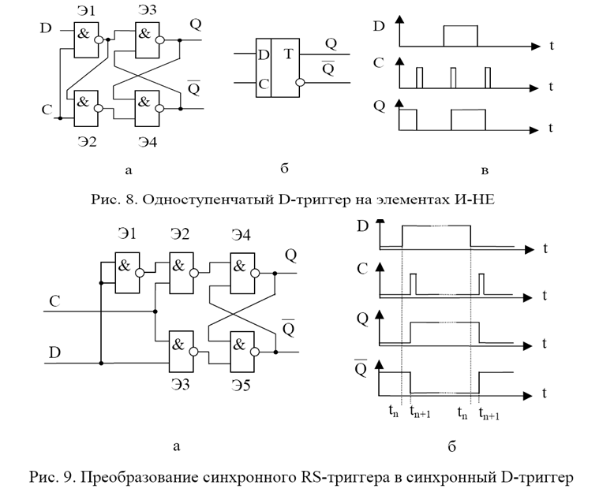
Следовательно, при 0 = C n n Q Q = +1 , а при 1 = C n n D Q = +1 . Временные диаграммы, поясняющие работу D-триггера, приведены на рис. 8, в.
D-триггер возможно получить из синхронного RS-триггера, если ввести дополнительный инвертор Э1 между входами R и S (рис. 9, а). В таком триггере состояние неопределенности для входов R и S исключается, так как инвертор Э1 формирует на входе R сигнал S . Временные диаграммы записи в D-триггер напряжений высокого и низкого входных уровней и их считывание приведены на рис. 9,б. Обязательным условием правильной работы D-триггера является наличие защитного временного интервала после прихода импульса на вход D перед тактовым импульсом (вход C). Этот интервал времени n n t t − +1 определяется справочными данными на D-триггер.
Комбинированные D-триггеры имеют дополнительные входы асинхронной установки логических 0 и 1 – входы S и R. Схема и условное обозначение одного такого триггера представлены на рис. 10. Триггер собран на шести элементах И-НЕ по схеме трех RS-триггеров. Входы S и R служат для первоначальной установки триггера в определенное состояние.
Если 0 = = D C , установить 0 = S , а 1 = R , то элементы Э1–Э 5 будут закрыты, а элемент Э 6 будет открыт, т.е. 0 , 1 = = Q Q . При снятии нулевого сигнала со входа S откроется элемент Э1, состояние остальных элементов не изменится. При подаче единичного сигнала на вход С на всех входах элемента Э 3будут действовать единичные сигналы и он откроется, а элемент Э 6 закроется: 1 = Q . Теперь на всех входах элемента Э 5 действуют единичные сигналы, и он будет открыт: 0 = Q . Следовательно, после переключения триггера сигнал на выходе Q стал равным сигналу на входе D до переключения: 0 1 = = + n n D Q . После снятия единичного сигнала со входа C состояние триггера не изменится. D-триггер может работать как T-триггер. Для этого необходимо вход D соединить с инверсным выходом триггера Q (рис. 11, а, б). Если на входе D поставить дополнительный двухвходовый элемент И, инверсный выход триггера Q соединить с одним из входов элемента И, а на второй вход подать сигнал ЕI, то получим T-триггер с дополнительным разрешением по входу (рис. 11, в).
2.1.5. JK-триггеры
JK-триггеры подразделяются на универсальные и комбинированные.
Универсальный JK-триггер имеет два информационных входа J и K. По входу J-триггер устанавливается в состояние 0 , 1 = = Q Q , а по входу K – в состояние 1 , 0 = = Q Q .
JK-триггер отличается от RS-триггера прежде всего тем, что в нем устранена неопределенность, которая возникает в RS-триггере при определенной комбинации входных сигналов. Универсальность JK-триггера состоит в том, что он может выполнять функции RS-, T- и D-триггеров.
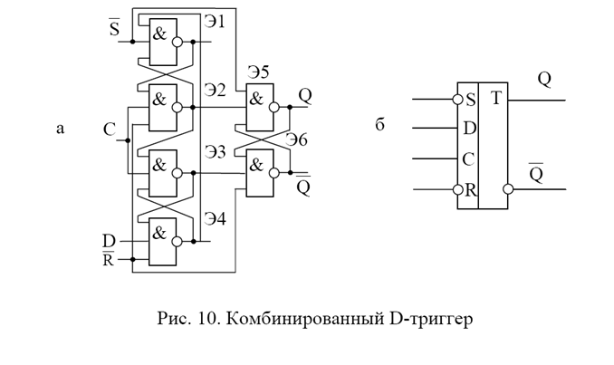
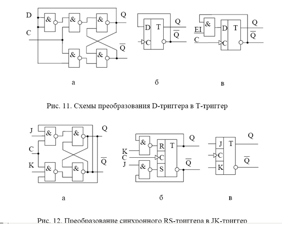
Комбинированный JK-триггер отличается от универсального наличием дополнительных асинхронных входов S и R для предварительной установки триггера в определенное состояние (логической 1 или 0). Простейший JK-триггер можно получить из синхронного RS-триггера (рис. 12, а, б, в), если ввести дополнительные обратные связи с выходов триггера на входы, которые позволяют устранить неопределенность в таблице состояний. Если входы J, K и C объединить, то получим T-триггер, который переключается каждым входным импульсом (рис. 13).
JK-триггер имеет следующую таблицу состояний (табл. 3).
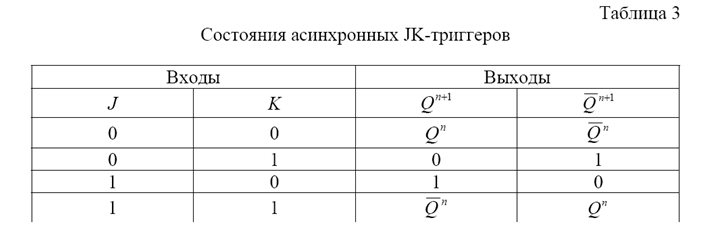
При входных сигналах 0 = = K J состояние триггера не изменяется, так как напряжение низкого уровня на одном входе элемента И-НЕ отменяет про хождение сигналов от других его входов и удерживает выходной сигнал на высоком уровне. Если на входы J и K подать взаимно противоположные уровни, то при подаче перепада напряжения на вход C выходы JK-триггера устанавливаются в такие же состояния. При подаче на входы J и K одновременно напряжений высокого уровня триггер переключается в состояние, противоположное предыдущему, если на вход синхронизации C подать перепад напряжения. Управление полным тактовым импульсом, подаваемым на вход C, применяется для двухступенчатых триггеров (см. рис. 13). Такой триггер тоже имеет обратные связи с выходов на входы, исключающие неопределенное состояние триггера.
Из JK-триггера можно получить D-триггер, если вход K соединить со входом J через дополнительный инвертор (рис. 14).
КОНТРОЛЬНЫЕ ВОПРОСЫ
1. Определение, схемы, условные обозначения и работа RS-триггеров.
2. Определение, схемы, условные обозначения и работа D-триггеров.
4. Определение, схемы, условные обозначения и работа T-триггеров.
ЛИТЕРАТУРА
1. Фролкин В.Т., Попов Л.Н. Импульсные и цифровые устройства: Учеб. пособие для вузов. – М.: Радио и связь, 1992. – 336 с.
2. Цифровые интегральные микросхемы: Справочник. – Мн.: Полымя, 1996. – 605 с. Св. план 2003, поз. 65 Учебное издание
Триггерные элементы
Цель: изучение использование тригерных элементов устройств в современной ЭВМ
План:
1. Общее понятия о триггерах
2. SR триггеры
4. JKтриггеры
5. двухступенчатые триггеры
Общее понятия о триггерах
Триггер это электронная схема с двумя устойчивыми состояниями.
Схемы триггеров выполненных на логических элементах обладают рядом свойств.
Высокое быстродействие обеспечиваемое положительной обратной связью между схемами.
Высокая помехоустойчивость т.е когда случайные всплески напряжения на входах триггера не переводят его из одного состояния в другое. Как схема имеющая два устойчивых состояния триггер используется для представления двоичных символов в ЭВМ.
Триггер в любом из разрешенных состояний может находиться сколько угодно долго.
Последовательное во времени преобразование двоичной информации требует организации хранения исходных данных, промежуточных и окончательных результатов на запоминающих элементах. Временное хранение данных необходимо для ожидания разновременно поступающих аргументов, для многократной передачи данных в разные устройства.
У элементов для запоминания двоичной информации должно быть три режима работы: запись, хранение и выдача информации.
В режиме хранения запоминающие элементы находятся в одном из двух состояний: нулевом или единичном. В режиме записи возможна запись «0» или «1». Для установки состояний предусматривается два входа: S-вход для установки в «1» и R-вход для в «0». В режиме хранения входные воздействия должны быть заблокированы. Режим выдачи обычно не организован. Как правило, запоминающие элементы имеют два постоянно действующих выхода: нулевой (Q-выход), фиксирующий нулевое состояние и единичный (Q-выход) фиксирующий единичное состояние. Выходы элемента взаимно инвестны. Уровни напряжений с выходов Q и Q непосредственно передаются в другие устройства, в которых организуется прием этих уровней.
Если же запоминающие элементы не предназначены для подключения к интерфейсным линиям связи шинного типа, то специальных выходных логических схем они не содержат.
По способу записи информации триггеры делятся на:
- Асинхронные
- Синхронные
Синхронный имеет специальный вход синхронизации «С». Сигнал по этому входу разрешает поступление в схему триггера очередной информации, воздействуя на триггер либо с помощью определенного уровня напряжения (схема с управлением уровня потенциала), либо с помощью перепада напряжения (схема с динамическим управлением записью).
Асинхронный SR –триггер
Основу же запоминающих элементов составляет асинхронный триггер с двумя выходами Q и Q и двумя установочными входами. Такой триггер называется симметричным, поскольку структурно состоит из двух одинаковых микросхем ИЛИ – НЕ или И-НЕ, охваченные взаимообратными связями; любой из входов, кроме того, может быть назначен и определен в качестве нулевого или единичного.
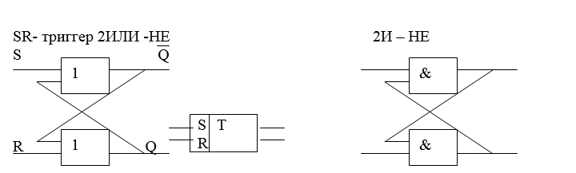
S-set –установка, вход установки, единичное состояние
R – reset –сброс вход установки в «О» состояние.
1. Если хотя бы на одном входе «дежурит» «1» то элемент на выходе вырабатывает «О».
2. Если на одном из входов «0» то с приходом второго «0» , схема вырабатывает «1» сигнал.
Поведение асинхронного SR- триггера на элементах 2 ИЛИ –НЕ определяется таблицей переходов.
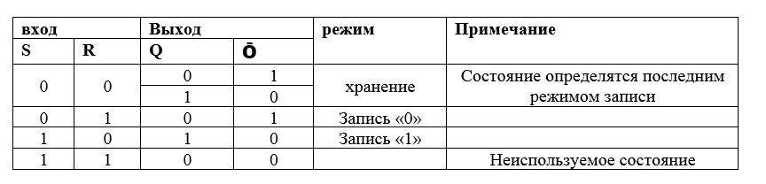
Если установочные входа известны предыдущим т.е в таких триггерах действующее значение «0».
Поведение асинхронного SR – триггера ( в литературе выпуска до 2000 года все асинхронные триггеры не зависимо от входов записаны как SR триггеры) на элементах «2И-НЕ» определяются следующей таблицей переходов.
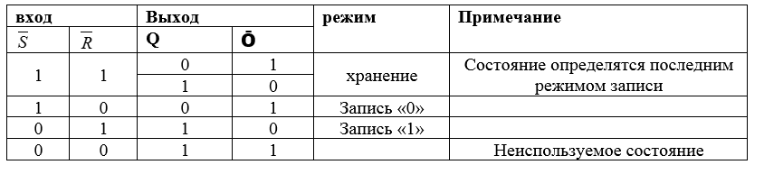
В последних строках таблиц приведены комбинации значений установочных входов при которых выходные уровни не соответствуют принятому кодированию состояний, и главное приводят к непредсказуемому состоянию после перехода к режиму хранения.
Принцип работы асинхронного триггера
При передаче сигналов соответствующих единицам на входе S и R триггер не изменит своего переходящего состояния, что соответствует режиму хранения информации. Сигнал низкого уровня, подаваемый на вход R или S, приведет к установке триггера в состояние «1» или «0» соответственно. Если на вход одновременно подать сигналы соответствующие «0» , то триггер примет неопределенное состояние. Поэтому комбинация R=S=0 для него является запрещенной.
Большинство логических преобразований в устройствах тяготеют к входам запоминающих элементов, поэтому некоторые их стандартные действия переносятся на входные цепи триггеров. В частности, в триггерные схемы вводятся схемы управления и синхронизации с соответствующими сигналами V или C. Для этих сигналов предусматриваются дополнительные входы, которые используются в основном для управления установочными входами, а сами схемы управления и синхронизации реализуются с помощью схем И-НЕ. Управляющий V- вход может отсутствовать, его роль может выполнять синровход (С-вход). Триггеры, содержащие V- вход и С-вход называют управляемыми.
Управляемый SR-триггер
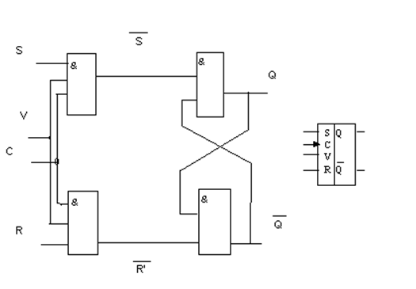
Сигналы на С – входах определяют момент переключения триггера по переднему фронту синхросигнала, и на условных изображениях триггера (На условных изображениях триггера это отражается стрелкой на С-входе).
При определенных условиях входы управления и синхронизации могут использоваться в качестве установочных входов. К примеру, одна из управляющих схем И-НЕ может быть использована для формирования установочных входных комбинаций 0-1 и 1-0. В этом случае исчезает неиспользуемая установочная комбинация, а режим записи формируется управляющим V-входом. Вместо двух установочных входов S и R в таком триггере используется помимо управляющего V-входа единственный установочный вход, названный D-входом.
D-триггер
Схема D- триггера строится на 4- элементах НЕ-И
D-delay(задержка)
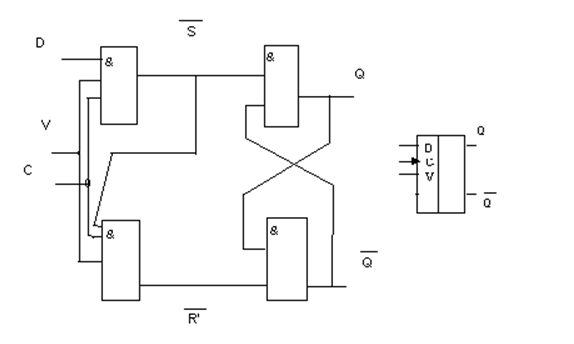
При переходе логического уровня на входе с «О» на «1» происходит запись информации в триггер, и он устанавливается в положение соответствующее логическому уровню на входе D.
Поведение D триггера определяется таблицей переходов
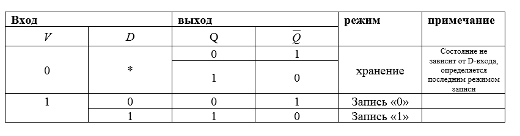
JK-триггер
Триггеры этого типа отличаются от SR-триггера тем, что при значениях входной информации, запрещенной для SR-триггеров, они инвестируют хранящуюся в них информацию за счет обратной «штатной» связи.
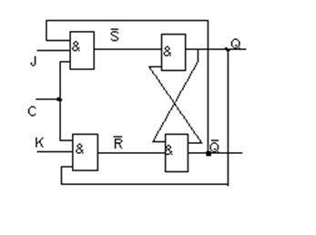
Принцип работы
При входных сигналах J=K=0 состояние триггера не изменится, т.к. напряжение низкого уровня на одном входе элемента И-НЕ отменяет прохождение сигналов от других его входов и удерживает выходной сигнал на высоком уровне. Если на входы JK подать взаимно противоположные уровни, то при подаче перепада напряжения на вход с выхода JK-триггера устанавливаются в такие же состояния. При подаче на входы J и K одновременно напряжений высокого уровня триггер переключается в состояние, противоположное предыдущему.
Особенность этого триггера – отсутствие неиспользуемой входной комбинации. Комбинация входов JK =1 приводит к изменению состояния триггера, т.е. к счетному режиму. Поведение JK-триггера определяется таблицей
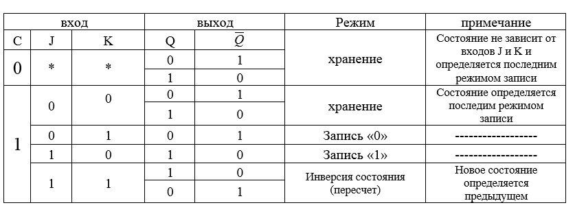
За исключением случая, когда действует входная комбинация JK=1, поведение JK-триггера такое же, как и SR-триггера. Роль единичного входа выполняет J-вход, нулевого –К- вход.
Все рассмотренные запоминающие элементы относятся к классу одноступенчатых триггеров, содержащих только одну запоминающую схему. Иногда такие триггеры называют простыми. Как только на входе простых триггеров изменится установочная комбинация, на выходах немедленно изменятся выходные уровни, свидетельствующие об изменении состояний триггеров. Подобная реакция в ряде случаев недопустима. В общем случае она не позволяет управлять выработкой новых значений установочных входов собственным действующим состоянием, а также состояниями всех других переключаемых в том же такте триггеров.
В частности, простые триггеры нельзя непосредственно использовать в сдвигающих регистрах, в однозарядных пересчетных схемах по модулю два и т.д.
Во всех подобного рода схемах используются так называемые сложные двухступенчатые триггеры, содержащие не менее двух запоминающих схем.
Двухступенчатые триггеры
Сложные триггеры представляют собой элементарную сдвигающую схему: в начале по фронту синхросигнала С двоичный символ записывается в триггере первой ступени, затем по противоположному фронту того же синхросигнала тот же символ перезаписывается в триггер второй ступени, выходы которого отождествляются с выходами двухступенчатого триггера. Образующиеся внутренние задержки длительностью ширины синхросигнала способствуют простой организации пересчетных, сдвиговых и иных схем в которых установочные комбинации триггеров могут управляться выходами любых триггеров, включая собственные, независимо от времени их переключения.
Существуют два вида схем двухступенчатых триггеров: схема последовательного управления и схема параллельного управления.
Двухступенчатый SR- триггер последовательного управления
Схема двухступенчатого триггера SR- триггера последовательного управления представлена на рис.
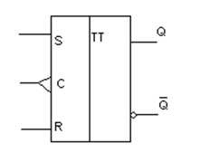
Начало его работы в режиме записи определяется фронтом сигнала фронтом синхросигнала . После установления положительного уровня синхросигнала С принимающий триггер Т1 находится в режиме записи или остается в режиме хранения 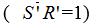 В это же время выходной триггер Т2 находится в режиме хранения записанного раннего символа ('=1), поэтому выходные уровни Q,Q в режиме записи не меняются. Переключение переходных уровней, т.е. начало режима хранения записанного символа наступает по фронту синхросигналы ↓. Данное обстоятельство специально обозначается на условном изображении триггера стрелкой С-входа, направленной справа налево
или остается в режиме хранения 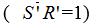 В это же время выходной триггер Т2 находится в режиме хранения записанного раннего символа ('=1), поэтому выходные уровни Q,Q в режиме записи не меняются. Переключение переходных уровней, т.е. начало режима хранения записанного символа наступает по фронту синхросигналы ↓. Данное обстоятельство специально обозначается на условном изображении триггера стрелкой С-входа, направленной справа налево
Двухступенчатый D-триггер параллельного управления
При переходе логического уровня на входе с «0» на «1» происходит запись информации в триггер, и он устанавливается в положение соответствующее логическому уровню на входе
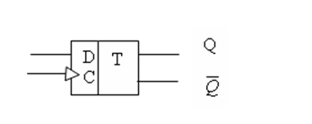
Следует иметь в виду, что триггер параллельного управления может работать только при разных уровнях входов S и R, поэтому практическое применение получил только двухступенчатый D-триггер параллельного управления рис.
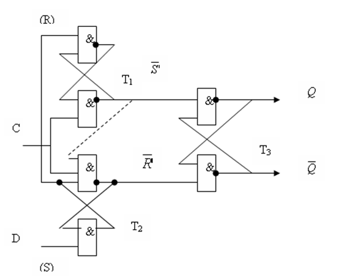
Принцип работы
В нем одна из схем 2И-НЕ принимающего триггера Т2 «по совместительству» выполняет функцию выработки установочной входной комбинации S R=1 от одного входа D –входа. Таким образом, двухступенчатые триггеры могут управляться своим входом. Поэтому в схему таких триггеров можно ввести «штатную» обратную связь. Что привело созданию JK- триггеров